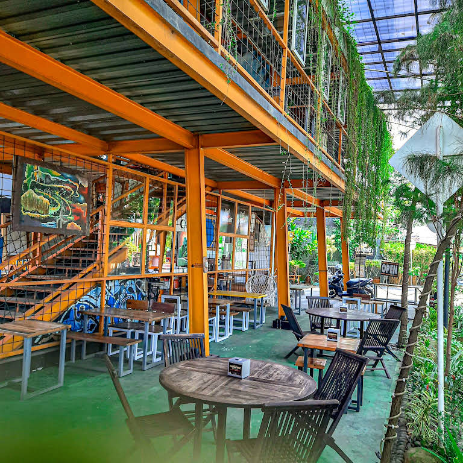
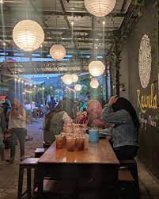

Kopi Senthet Kampoeng Riders
Kopi Senthet Kampoeng Riders merupakan salah satu resto dan caffe yang berlokasi di Kota Kendal. Saya diterima untuk bekerja di kopi senthet pada divisi kitchen yang pada awalnya saya mendaftar pada posisi waiters. Namun, bekerja di bagian kitchen juga dapat menambah ilmu dan keterampilan saya dalam hal mengolah makanan. Setelah bekerja di tempat tersebut saya menjadi tahu bagaimana jalannya kegiatan operasional di bidang kuliner.

Kawula Angkringan Modern dan Coffe
Kawula Angkringan Modern dan Coffe merupakan salah satu angkringan modern dan caffe yang berlokasi di Kabupaten Batang tepatnya Gringsing. Di Kawula angkringan saya diterima untuk bekerja di kitchen. Lagi-lagi saya mendapatkan kesempatan dalam memperkuat skill memasak saya, karena pada setiap memiliki ciri khas masing-masing ilmu yang saya dapat menjadi lebih luas.